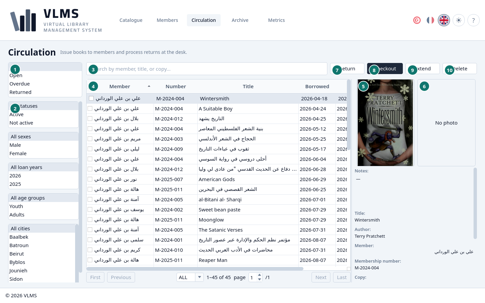
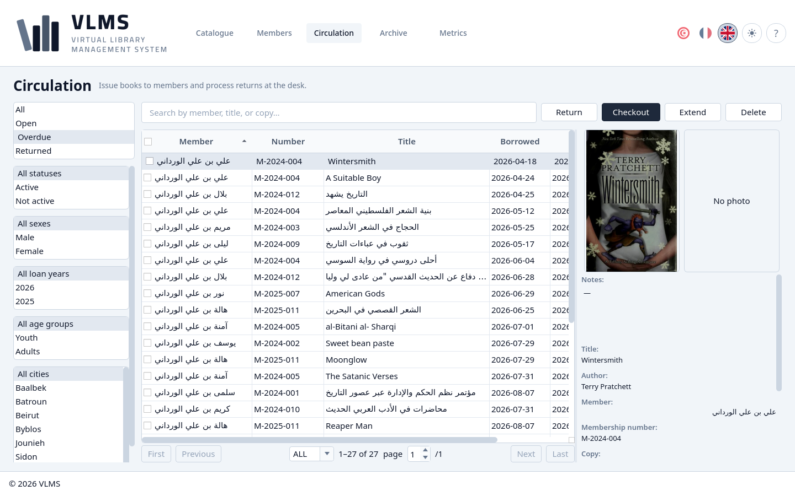
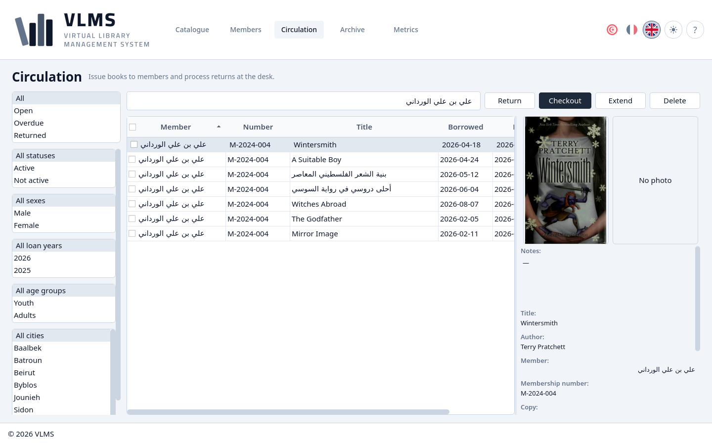

Circulation
See what is out, what is late, and what has come back.
Circulation is the live list of loans. Archived loans are on the Archive screen.


- The status filter.
- The member filters.
- Search.
- The list of loans.
- The cover of the borrowed title, or the placeholder when it has none.
- The member's photograph, or No photo.
- Return
- Checkout
- Extend
- Delete
The details of the highlighted loan sit under the two pictures: the member, the copy, and the dates.
The status filter
The filter is one choice. It opens on All.
- Open — out, and due today or later.
- Overdue — out, and past the due day.
- Returned — back on the shelf.
The three states are exclusive. They are set out in Loan states.


The member filters
Under the status filter are the lists from Members: status, sex, age group, and city keep the loans whose member matches. The year list, which starts on All loan years, is the year the loan was made, not the year the member registered. They combine with the status filter and with each other, so Overdue and Youth lists the late loans of young members.
Search
Search matches the book's title, the membership number, or the member's full name.


The buttons
Checkout lends a copy. Extend and Return follow the highlighted loan and are available only while that loan is still out. Delete archives a returned loan. The steps are Lend a book, Return or extend, and Remove.